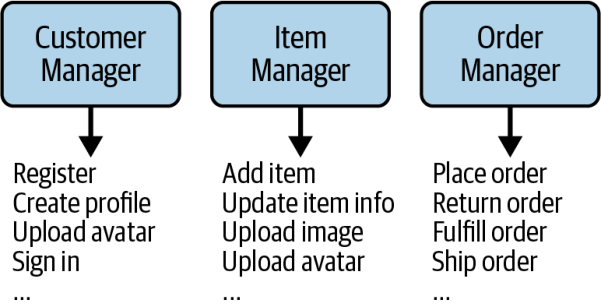
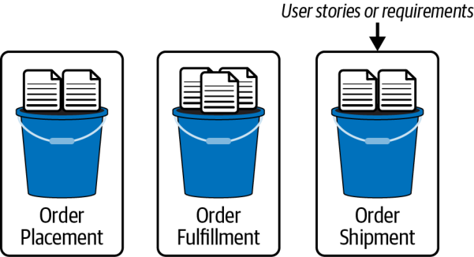

ساختنِ معماری منطقی (ادامه)
شناساییِ مؤلفههای اصلی (ادامه)
رویکردِ گردشکار
یکی از رویکردهای رایجی که معماران برای شناساییِ مؤلفههای اصلیِ اولیهٔ یک معماری منطقی به کار میبرند، رویکرد گردشکار است. همانطور که از نامش پیداست، این رویکرد از گردشکارهای اصلیِ مسیرِ موفق (happy path)، یعنی گردشکارهای بدونِ خطایی که کاربر ممکن است در سیستم طی کند (یا گردشکارِ اصلیِ پردازشِ درخواستها)، بهره میگیرد. اگر معمار تصوری کلی از این جریان داشته باشد، میتواند مؤلفهها را بر پایهٔ گامهای آن بسازد.
برای نمونه، فرض کنید در حالِ ساختنِ یک سیستمِ ثبتِ سفارشِ جدید برای شرکتتان هستید. هنوز الزامات و مشخصاتِ دقیق را نمیدانید، اما دستکم گردشکارِ کلیِ پردازشِ یک سفارشِ جدید را میشناسید. بنابراین میتوانید به هر گامِ گردشکار یک مؤلفه تخصیص دهید:
- کاربر کاتالوگِ اقلام را مرور میکند ← Item Browser
- کاربر سفارش ثبت میکند ← Order Placement
- کاربر هزینهٔ سفارش را میپردازد ← Order Payment
- ایمیلی حاویِ جزئیاتِ سفارش برای کاربر ارسال میشود ← Customer Notification
- سفارش آماده میشود ← Order Fulfillment
- سفارش ارسال میشود ← Order Shipment
- به مشتری ایمیل زده میشود که سفارش ارسال شده است ← Customer Notification
- محموله ردیابی میشود ← Order Tracking
در رویکرد گردشکار، هر گامِ گردشکارِ اصلی لزوماً مؤلفهٔ جدیدی پدید نمیآورد. در گردشکارِ بالا، گامهای ۴ و ۷ هر دو از مؤلفهٔ Customer Notification استفاده میکنند. معمار هر تعداد گردشکارِ اصلی یا سفرِ کاربری (user journey) را که بتواند برای سیستم مدل میکند و مؤلفههای متناظر را از گامهای آنها شناسایی میکند.
این نیز، باز هم، تنها «بهترین حدس» دربارهٔ شکلِ احتمالیِ معماری منطقی است. این مؤلفهها سطلهایی خالیاند و هنوز مسئولیتی ندارند؛ بنابراین به احتمالِ زیاد در طولِ تکاملشان تغییر خواهند کرد (چنانکه در شکل ۸-۶ نشان داده شد). این کاملاً طبیعی و بخشی از ماهیتِ تکرارشوندهٔ معماری نرمافزار است. نگرانِ مدلکردنِ همهٔ گردشکارهای سیستمتان نباشید. در عوض، بر گردشکارهای اصلی تمرکز کنید. بقیه همانطور که دربارهٔ سیستم بیشتر میآموزید و گردآوریِ داستانهای کاربری و الزامات را آغاز میکنید، شکل میگیرند.
رویکردِ کنشگر/کنش
راهِ دیگری که معماران برای شناساییِ مؤلفههای اصلیِ اولیه به کار میبرند، رویکرد کنشگر/کنش است. این رویکرد بهویژه زمانی سودمند است که سیستم چندین کنشگر داشته باشد. در این رویکرد، معمار کنشهای اصلیای را که کاربر میتواند در سیستم انجام دهد (مانندِ ثبتِ سفارش) شناسایی میکند. خودِ سیستم نیز همیشه یک کنشگر است که کارکردهای خودکاری مانندِ صدورِ صورتحساب و تأمینِ دوبارهٔ موجودیِ انبار را انجام میدهد.
در مثالِ سیستمِ ثبتِ سفارشِ ما، معمار ممکن است سه کنشگر را شناسایی کند: مشتری، بستهبندِ سفارش (order packer) (کسی که جعبه را بستهبندی میکند و برای ارسال میفرستد) و سیستم. سپس معمار کنشهای اصلیِ هر یک از این کنشگران را شناسایی میکند و به آن کنشها مؤلفه تخصیص میدهد:
کنشگرِ مشتری:
- جستوجوی اقلام ← Item Search
- مشاهدهٔ جزئیاتِ یک قلم کالا ← Item Details
- ثبتِ سفارش ← Order Placement
- لغوِ سفارش ← Order Cancel
- ثبتنام بهعنوانِ مشتریِ جدید ← Customer Registration
- بهروزرسانیِ اطلاعاتِ مشتری ← Customer Profile
کنشگرِ بستهبندِ سفارش:
- انتخابِ اندازهٔ جعبه ← Order Fulfillment
- علامتگذاریِ سفارش بهعنوانِ آمادهٔ ارسال ← Order Fulfillment
- ارسالِ سفارش برای مشتری ← Order Shipment
کنشگرِ سیستم:
- تنظیمِ موجودیِ انبار ← Inventory Management
- سفارشِ موجودیِ بیشتر از تأمینکننده ← Supplier Ordering
- اعمالِ پرداخت ← Order Payment
همانند رویکرد گردشکار، هر کنش لزوماً مؤلفهٔ خودش را ندارد. برای نمونه، انتخابِ اندازهٔ جعبه برای سفارش و علامتگذاریِ آن بهعنوانِ آمادهٔ ارسال، هر دو را مؤلفهٔ Order Fulfillment انجام میدهد.
بهطورِ کلی، رویکرد کنشگر/کنش، بسته به اینکه معمار چند گردشکارِ اصلی را برای مدلسازی برگزیند، مؤلفههای بیشتری از رویکرد گردشکار تولید میکند. با این حال، در هر دو رویکرد، معمار میتواند مؤلفههای اصلیِ اولیه و شیوهٔ ارتباطِ آنها را حتی پیش از دریافتِ الزامات یا مشخصاتِ تفصیلی شناسایی کند.
تلهٔ موجودیت
وسوسهٔ بسیار زیادی برای معمار وجود دارد که شناساییِ مؤلفهها را با تمرکز بر موجودیتهای درگیر در سیستم آغاز کند و سپس مؤلفهها را از آن موجودیتها استخراج کند. برای نمونه، در یک سیستمِ ثبتِ سفارشِ معمولی، ممکن است Customer، Item و Order را موجودیتهای اصلیِ سیستم تشخیص دهید و به تناظرِ آنها مؤلفههای Customer Manager، Item Manager و Order Manager را بسازید. به دلایلِ زیر قویاً از این رویکرد برحذر میداریم.
نخست، نامهای این مؤلفههای منطقی مبهماند و نقشِ مؤلفه را توصیف نمیکنند. برای نمونه، اگر فقط با نگاه به نامِ مؤلفهٔ Order Manager بپرسیم چه کاری انجام میدهد، پاسخِ بیفایدهٔ «سفارشها را مدیریت میکند» به دست میآید که هیچ چیزی دربارهٔ نقش یا مسئولیتِ مشخصِ آن در سیستم نمیگوید. این را با نامِ مؤلفهای مانندِ Validate Order مقایسه کنید تا اهمیتِ نامِ خوب و توصیفیِ مؤلفه روشن شود. اگر نامِ مؤلفهای پسوندی مانندِ Manager، Supervisor، Controller، Handler، Engine یا Processor داشته باشد، نشانهٔ خوبی است که معمار ممکن است در دامِ ضدالگوی تلهٔ موجودیت افتاده باشد.
دوم، مؤلفهها به انبارِ درهمی (dumping ground) برای کارکردهای مرتبط با حوزه تبدیل میشوند. نامِ مؤلفهای موجودیتمحور مانندِ Order Manager را در نظر بگیرید که در شکل ۸-۸ نشان داده شده است. هر ذره از کارکردهای مربوط به سفارش در همین یک مؤلفه جای میگیرد: اعتبارسنجیِ سفارش، ثبتِ سفارش، تاریخچهٔ سفارش، آمادهسازیِ سفارش، ارسالِ سفارش، ردیابیِ سفارش و جز آن. این مؤلفه در اصل به آن کلاسهای کمکیِ «همهچیزدار» (kitchen sink) شبیه میشود که هر توسعهدهندهای دستکم یک بار در دورهٔ کاریاش نوشته است؛ کلاسهایی با دهها متد که دستکاریِ رشتهها، دستکاریِ دادهها، محاسباتِ زمانی و هر چیزِ دیگری را که توسعهدهنده بتواند در آن بگنجاند انجام میدهند.
سوم، وقتی مؤلفهها بیش از حد درشتدانه (coarse-grained) شوند، کارهای بیش از حد انجام میدهند و هدفشان را از دست میدهند. مؤلفهها بهجای آنکه ریزدانه (fine-grained) و تکمنظوره باشند (مانندِ مثالِ مؤلفهٔ Validate Order)، ممکن است بیش از حد بزرگ شوند. نگهداری، آزمون و استقرارِ چنین مؤلفههایی دشوار است و از این رو چندان قابل اعتماد نیستند.

اگر معمار سیستمی میسازد که واقعاً موجودیتمحور است و فقط عملیاتِ مبتنی بر CRUD (ایجاد، خواندن، بهروزرسانی و حذف) را روی آن موجودیتها انجام میدهد، آن سیستم به معماری نیاز ندارد؛ بلکه به یک چارچوب، ابزار یا محیطِ بدونکد/کمکد (no-code/low-code) مبتنی بر CRUD نیاز دارد که به توسعهدهندگان امکان دهد بیشترِ کدِ منبعی را که روی آن موجودیتها عمل میکند تولید کنند.
تخصیصِ داستانهای کاربری به مؤلفهها
گامِ بعدی در ساختنِ معماری منطقی، تخصیصِ داستانهای کاربری یا الزامات به مؤلفههای منطقی است. این فرایندی تکرارشونده است، زیرا بیشترِ داستانهای کاربری یا الزامات از پیش بهطورِ کامل شناختهشده نیستند؛ آنها همراه با تکاملِ سیستم تکامل مییابند. هدفِ این گام آغازِ پرکردنِ آن سطلهای خالی و دادنِ نقشها و مسئولیتهای مشخص به مؤلفههاست؛ چنانکه در شکل ۸-۹ نشان داده شده است.

برای اینکه ببینید مؤلفههای منطقی چگونه تکامل مییابند، داستانهای کاربریِ زیر را در نظر بگیرید:
مشتریِ شمارهٔ ۱: بهعنوانِ مشتری، میخواهم سفارشم اعتبارسنجی شود تا مطمئن شوم همهچیز را کامل و درست وارد کردهام.
آمادهکنندهٔ سفارش: بهعنوانِ کسی که سفارش را آماده میکند، میخواهم بدانم برای سفارش از چه اندازه جعبهای استفاده کنم تا بتوانم آن را به بهینهترین شکلِ ممکن بستهبندی کنم.
مشتریِ شمارهٔ ۲: بهعنوانِ مشتری، میخواهم هر بار که وضعیتِ سفارش تغییر میکند ایمیلی دریافت کنم تا همیشه از وضعیتِ سفارشم آگاه باشم.
فرض کنید معمار تاکنون مؤلفههای منطقیِ زیر را شناسایی کرده است:
- Order Placement
- Order Fulfillment
- Order Shipment
- Inventory Management
منطقی است که نخستین داستانِ کاربری را به مؤلفهٔ Order Placement تخصیص دهیم، زیرا کاربر برای ثبتِ سفارش با همین مؤلفه تعامل دارد:
اعتبارسنجیِ سفارش (داستانِ کاربریِ مشتریِ شمارهٔ ۱) ← Order Placement
تعیینِ اندازهٔ جعبه را احتمالاً باید مؤلفهٔ Order Fulfillment بر عهده بگیرد، زیرا این مؤلفه مسئولِ همهٔ منطقِ سیستم برای آمادهسازی و بستهبندیِ سفارش در جعبه است:
تعیینِ اندازهٔ جعبه (داستانِ کاربریِ آمادهکنندهٔ سفارش) ← Order Fulfillment
اما داستانِ کاربریِ سوم چه؟ کدامیک از چهار مؤلفهٔ فهرستشده باید هنگامِ ثبتِ سفارش، آمادهشدنِ آن برای ارسال و ارسالِ آن، به مشتری ایمیل بفرستد؟ پاسخ ممکن است مؤلفههای Order Placement، Order Fulfillment و Order Shipment باشد. اما به یاد داشته باشید که داستانِ کاربری از راهِ کدِ منبع پیاده میشود و این کد باید در دایرکتوری یا فضای نامِ مشخصی قرار گیرد. از آنجا که تکثیرِ این کد در سه مؤلفه ایدهٔ خوبی نیست، معمار باید مؤلفهٔ جدیدی برای رسیدگی به این داستانِ کاربری تعریف کند:
ایمیل به مشتری (داستانِ کاربریِ مشتریِ شمارهٔ ۲) ← Customer Notification (جدید)
مؤلفههای Order Placement، Order Fulfillment و Order Shipment باید با این مؤلفهٔ جدید ارتباط برقرار کنند تا به آن اطلاع دهند که ایمیلی بفرستد. با این افزوده، معماری منطقی اکنون مانندِ شکل ۸-۱۰ است.